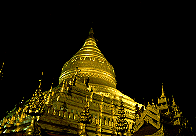

輝かしき2000年の一発目はミャンマーからのレポートである。
ミャンマーといえば頭に浮かぶのはビルマの竪琴でありアウンサンスーチーさんであったりする。
しかし
実はこのミャンマーというところ、国を挙げての大珍寺王国なのである。
数知れない大仏、巨大な寝釈迦像、得体の知れない仏像、そして何よりビッカンビッカンの超ド派手な装飾に囲まれた仏像がまつられている国、それがミャンマーである。
そこで私はこの神秘のヴェールに包まれた珍寺マニアのプロミストランド、ミャンマーのハイグレードなパゴダを皆様に紹介すべく機上の人と相成った訳である。
と、いうわけで

まずはミャンマーの一般＆珍寺事情を少しだけ。
この国は決して物質的には豊かな国では無い。通信、交通、物流その他、諸々の生活レベルは非常に低いと言わざるを得ない。しかしそれに反して寺は豪華絢爛、この国の富の殆どは寺院に回されているのではないか、と思える程である。実際、ミャンマーの人々は信仰心が篤く、よく寄進をしているようで、年収の何割を寄進しているのか大変気になるところである。それと同時にもう少し現世への投資をしてもいいんじゃねえのか、などとお節介なことを言いたくなってしまう。
また、それらの信仰心はミャンマーの人々の国民性に深く影響しており、日本、または他のアジア諸国では考えられない位親切である。ボロは着てても心と寺は錦、そんな国なのである。
寺は一般的にパゴダと呼ばる。ストゥーパのような仏塔を中心に構成された境内には様々な仏像やお堂、また後に述べる様々なアトラクションが参拝者を迎えてくれる。娯楽の少ないミャンマーでは若いカップルがデートをしていたりして、単なる信仰の対象だけでなく市民の憩いの場にもなっている点が大変よろしい。
ミャンマーではパゴダというのは寺でもあり遊園地でもあり公園でもあり市場でもある大変重要な場所なのだ。
というわけで早速、珍寺パラダイスミャンマーのパゴダを見てみよう。
↓ここからスタート！

メニュー
ヤンゴンYANGON
バゴーBAGO
マンダレーMANDALAY
ザガインSAGAIN
モンユアMONYWA
おまけモンユアの栄螺堂！？
バガンBAGAN
2000.1.
珍寺大道場 HOME